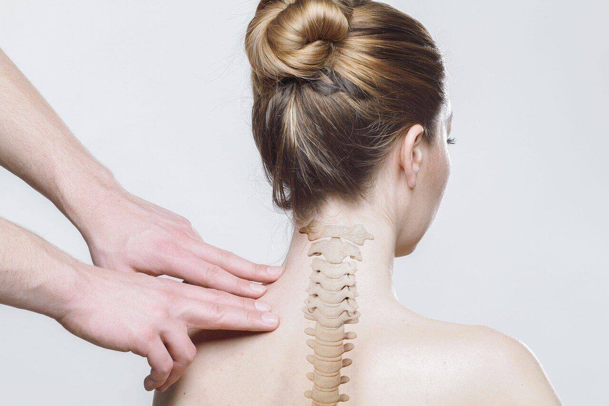
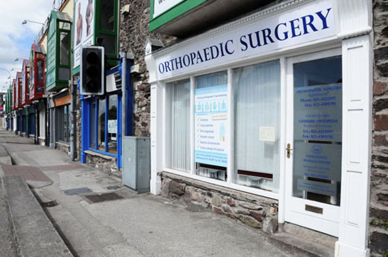
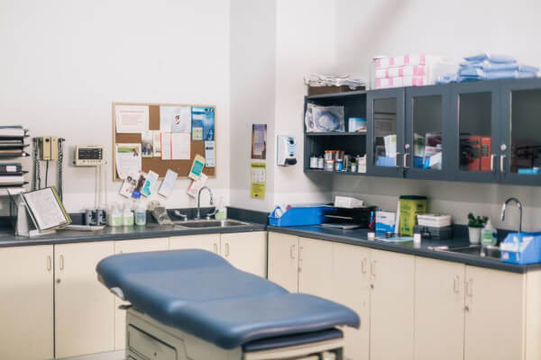
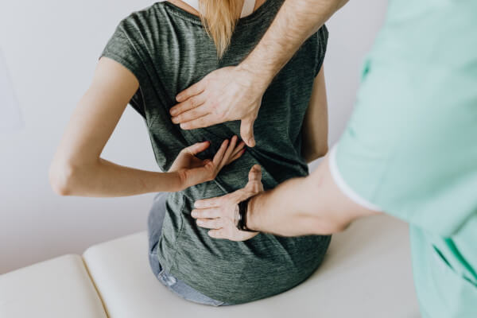
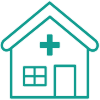

Mr. Marek Nowrot
Trauma and Orthopaedic Surgeon

Trauma and Orthopaedic Surgeon
PORADNIAURAZOWO-ORTOPEDYCZNA
lek. med. Marek Nowrot
Specjalista Chirurgii Urazowo - Ortopedycznej,
Członek Polskiego Towarzystwa Ortopedycznego i Traumatologicznego
oraz European Society for Sports Traumatology, Knee Surgery and Arthroscopy - Europejskiego Towarzystwa Traumatologii Sportowej, Chirurgii Kolana i Artroskopii.
Specjalista Chirurgii Urazowo - Ortopedycznej,
Członek Polskiego Towarzystwa Ortopedycznego i Traumatologicznego
oraz European Society for Sports Traumatology, Knee Surgery and Arthroscopy - Europejskiego Towarzystwa Traumatologii Sportowej, Chirurgii Kolana i Artroskopii.
 Od ponad 10 lat w tym samym miejscu. Prowadzona przez jedynego polskiego specjaliste mieszkajacego w Irlandii na stale. Pierwsza i jedyna w Irlandii polska specjalistyczna poradnia urazowo - ortopedyczna.
Od ponad 10 lat w tym samym miejscu. Prowadzona przez jedynego polskiego specjaliste mieszkajacego w Irlandii na stale. Pierwsza i jedyna w Irlandii polska specjalistyczna poradnia urazowo - ortopedyczna.
REJESTRACJA TELEFONICZNA NA TERMIN WIZYTY W GODZINACH I DNIACH PRACY PORADNI.
Godziny otwarcia
| Poniedzialek | Nieczynne |
|---|---|
| Wtorek | 9.30 - 13.00, 14.00 - 17.00 |
| Sroda | 9.30 - 13.30 |
| Czwartek | 9.30 - 13.00 |
| Piatek | 9.30 - 13.00, 14.00 - 17.00 |
| Sobota | 9.30 - 13.00 |
| Nedziela | Nieczynne |
Opening hours
| Monday | Closed |
|---|---|
| Tuesday | 9.30am - 1pm, 2pm - 5pm |
| Wednesday | 9.30am - 1.30pm |
| Thursday | 9.30am - 1.30pm |
| Friday | 9.30am - 1pm, 2pm - 5 pm |
| Saturday | 9.30am - 1pm |
| Sunday | Closed |
BEZ SKIEROWANIA:
Przyjmujemy płatności za pomocą kart kredytowych.
CREDITS CARDS ACCEPTED.
Praktyka posiada akredytację VHI (Voluntary Health Insurance) oraz Laya-Healthcare.
- zapraszamy pacjentów wcześniej leczonych w naszej poradni,
- z prywatnym ubezpieczeniem (VHI,Laya,itp.)
- lub nie posiadających lekarza G.P.
Przyjmujemy płatności za pomocą kart kredytowych.
CREDITS CARDS ACCEPTED.
Praktyka posiada akredytację VHI (Voluntary Health Insurance) oraz Laya-Healthcare.
About
Mr. Marek Nowrot earned his medical degree from the Medical University of Silesia in Katowice in 1996. After completing his work placement at the Provincial Specialist Hospital in Sosnowiec, he served as a full-time ambulance crew
doctor at the District Ambulance Unit in Katowice. In 1998 he started working as a doctor at the Urban Hospital No.2 in Myslowice. He spent there almost ten years. At the beginning he served as a doctor at the Anaesthesia Department.
Following that, he got a position at Trauma and Orthopaedic Department and Trauma and Orthopaedic Clinic. At the same time he was employed as a Trauma and Orthopaedics consultant for the Geriatric Hospital in Katowice with Specialist
Orthopaedic out-patient clinic and LUX–MED Private Medical Centre in Katowice.

Twice he served as a Sport Doctor all teams in the World Junior Ice Hockey Championship. Mr. Marek Nowrot found his career fulfillment working at the Trauma and Orthopaedic Department. He acquired there a lot of valuable experience. His interest in orthopaedic
started at the Silesian Medical University when he was an active member of the Orthopaedic Clinic scientific circle. Since he graduated he learnt diagnostic not only from theoretical but also practical point of view through the
individual contact with the patient. He was aware that practice and theory have to combine to the advantage of patients. What is more he learnt preventive and surgical treatment when it comes to trauma and orthopaedic surgery.
And now his manual dexterity and surgical techniques should be emphasized.

He posses all the qualities required to be a good, qualified orthopaedic surgeon. He constantly strives to improve his professional skills and abilities. He participates in numerous congresses and conferences not only national but also international.
He is active member of scientific and medical societies. He specializes in: arthroscopy of the knee, shoulder and ankle joint, Hip and knee replacement (endoprostheses), specialist orthopaedic treatment of motor organ injuries
and their consequences (condition after injuries). In 2008 and 2009 he was one of the staff members employed by Medicus Medical Centre both in Dublin and Cork. In 2008 he opened “Nowrot Orthosurgery” Trauma and Orthopaedic Specialist
Medical Centre located in City Centre of Cork. In 2009 he opened Orthopaedic Consulting Room in Santry exclusive quarter of Dublin.

Contact & Location
 Phone
021-4552897
Phone
021-4552897
Fax
021-4509290 (24/h)
 Gps
N 51.54.4 W 8.27.47
Gps
N 51.54.4 W 8.27.47
Address:
Unit 2, Penrose Wharf,
Penrose Quay,
Cork City
T23 XW02
Poradnia zlokalizowana jest w ścisłym centrum Cork.
5 minut pieszo od dworca kolejowego Irish Rail, dworca autobusowego Bus Eirean oraz przystanku autobusów Aircoach.
Przystanki autobusów są widoczne sprzed poradni.
Wejście do poradni od strony parkingu.
PIERWSZE 30 MINUT PARKING BEZPłATNY!
Na terenie parkingu, przed drzwiami poradni mozna napic się kawy albo herbaty oraz coś zjeśc.
Przystanki autobusów są widoczne sprzed poradni.
Wejście do poradni od strony parkingu.
PIERWSZE 30 MINUT PARKING BEZPłATNY!
Na terenie parkingu, przed drzwiami poradni mozna napic się kawy albo herbaty oraz coś zjeśc.